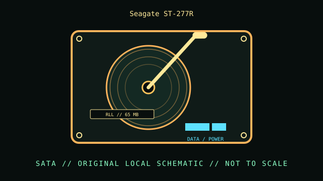

[ INDIVIDUAL COMPONENT // HARD DISK DRIVES ]
Seagate ST-277R
5.25-inch half-height RLL hard disk, 1980s. This record describes this exact catalog identity; related capacities, interface variants, suffixes, and revisions may have different properties.

IDENTIFICATION: Compare the complete model and suffix on the label with the manufacturer document and actual drive inquiry. Family-level values do not describe every revision or the condition of a particular unit.
Part specifications
| Catalog subcategory | MFM and early magnetic drives |
|---|---|
| Catalog identity | Seagate ST-277R |
| Product family | 5.25-inch half-height RLL hard disk, 1980s |
| Form factor | 5.25-inch half-height; exact external dimensions are not inferred from this class. |
| Interface | ST-506/ST-412-compatible RLL interface; requires an RLL-capable controller and separate data/control cabling. |
| Capacity / performance / sectors | 65 MB formatted nominal capacity; the shared Seagate manual distinguishes ST-277R from ST-251 and lists its own RLL geometry. Do not apply ST-251 geometry. |
| Compatibility | Requires compatible RLL encoding/controller support and model-correct geometry. It is not an IDE/PATA drive. |
Handling, service & preservation
- Before powering, document drive select, termination, controller type, cabling, and board condition. Preserve original setup and avoid cleaning or opening the sealed head-disk assembly.
- Before service, photograph the label, connectors, board markings, firmware/model identity, and installed carrier; note condition and any prior repair.
- Never open a hard disk outside a qualified clean environment. Mechanical shocks, contamination, and uncontrolled power cycling can worsen failure.
- For preservation, make independent verified copies and record checksums and read errors; SMART or self-test results are useful evidence but do not guarantee future reliability.
Model-specific source
- Seagate ST-251/ST-251R/ST-277R Product Manual, document 36035-001 Rev. A (1987; scan)Original Seagate manual scan expressly covers ST-277R; its RLL mechanism and capacity are not shared with ST-251.
Values above are limited to the cited exact-model or clearly identified model-family document. Record the document revision with any collection measurements.